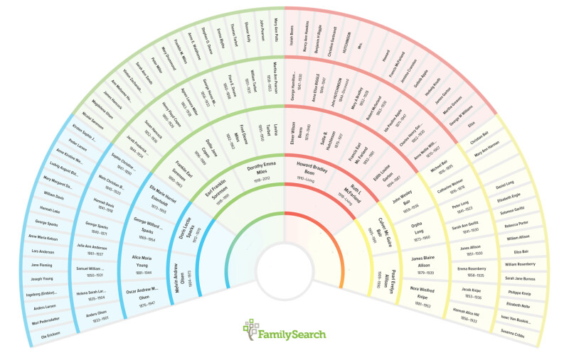

Family history, also called genealogy, is study of family lines, heritage, and the past through the perspective of family members. Family history may sound boring, like reading through old history books for school, but truly family history can be magical!!
Though family history involves a great deal of research, it begins to come alive as you begin to realize the lives your ancestors led.
Truly you come to see people in history as people just like you and I, who had real emotions and funny stories and who laughed and cried. The beautiful thing is that these people who came before us make up who we are.
Digging Through the Past Using Technology
Technological advances has made genealogy billions of times easier. Through technology we've been able to digitalize records, use DNA technology, and more in order to discover our family and their stories.
Websites to get you started
There are several websites to help get one started doing family history. My personal favorites are Family Search, and Ancestry. Both of these websites allow you to input information and build your family tree. They also will connect you to records and people who are already inputted into the system. Through these websites you can also collaborate with others to help build your family tree.
Family Search specifically has the ability to add memories (such as photos and stories) in addition to sources (records and such). On Family Search they have interactive games like seeing which of your ancestors you look the most like, or seeing where in the world all your ancestors are from. The Family Search app even has a tool called "relatives around me" where you can link with your friends and see how you're related.
 An example of a fan chart that one would use on family searchConnecting to the Wide World of Family History Lovers
There are so many people getting into family history as a hobby. Want to connect? Here's a link to follow that will show you all the options to connect to other genealogy guru's in Utah.